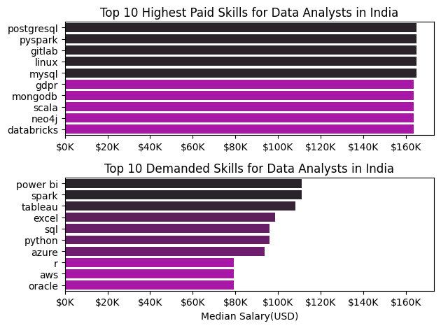
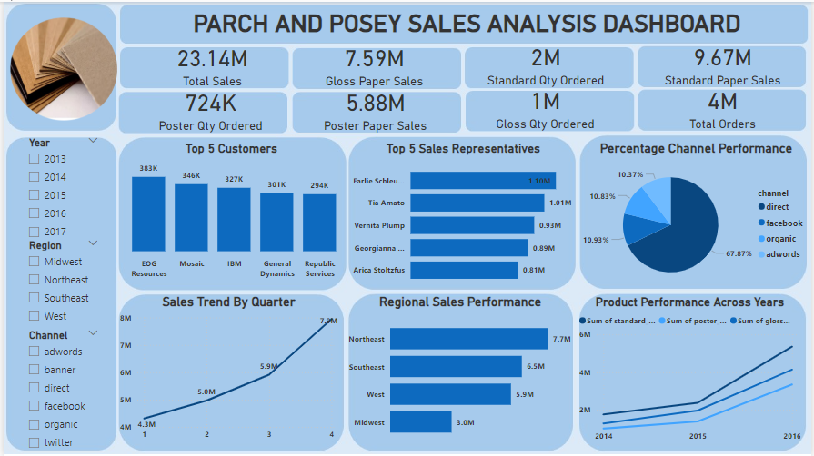
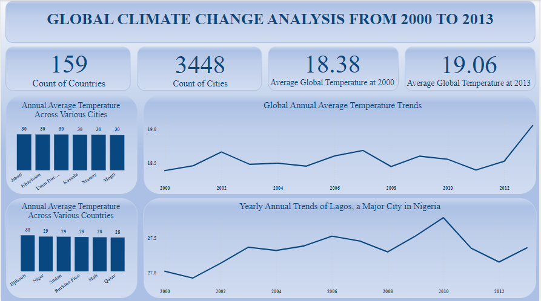
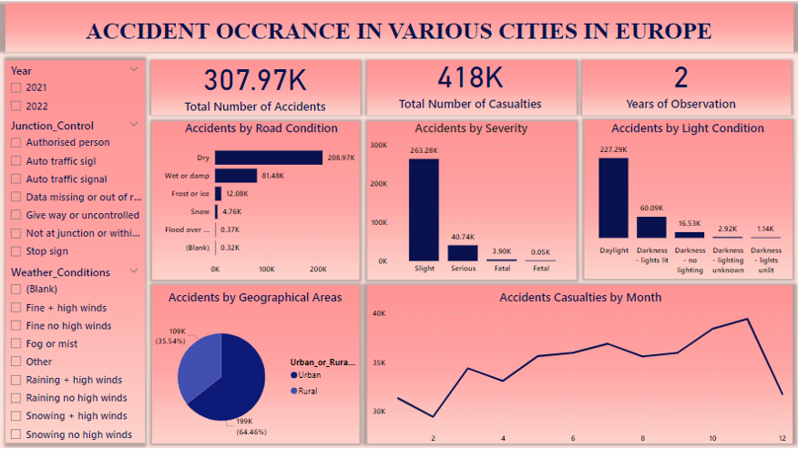
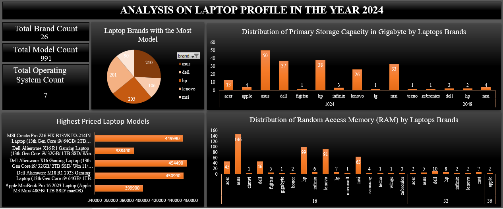
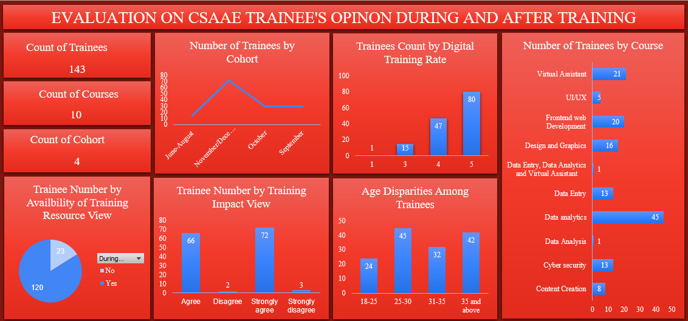

about me
I take pride in my expertise in Data Analytics. I have completed data analytics course at various academy and am eager to gain pratical work experience.
My technical skill includes; Microsoft Excel, Power bi and SQL, Python which I use extensively for data analysis. I am also open to acquiring additional skills as required by the demands of my work.
I am always eager to take on new challenges and expand my knowledge. Some attributes I possess include; grit, resilience, adaptability, and attentiveness. Additionally, my soft skills include; effective communication, time management, problem-solving, and critical thinking.

Welcome to my analysis of data jobs. The aim of this analysis is to explore specific data analysis jobs, uncover trends, and guide individuals eager to join the data analysis tech space on the various skills to learn, salary expectations, and how these skills have trended throughout the year.
This project leverages Python and powerful libraries like pandas, matplotlib, and seaborn for data analysis and visualization. The code is crafted and edited using Visual Studio Code, with its sleek interface enhancing productivity. To ensure accessibility and collaboration, the project is hosted on GitHub.
Project 1: Analysis on parch and posey sales report
Parch and Posey is a hypothetical company specializing in paper production. They produce three types of paper and serve a diverse customer base across multiple regions.
This project utilizes the PostgreSQL Database Management System to analyze and retrieve information related to revenue growth from the and Posey database.
Project 2: Analysis on olympics sports games from 1896 to 2016
The Olympic Games are a major international sports event featuring summer and winter sports competitions. The Games bring together athletes from around the world to compete in various sports, promoting international unity and sportsmanship.
This project uses the PostgreSQL Database Management System to retrieve specific information from the database used in this analysis.
Project 1: Parch and Posey Sales Analysis

This report provides an overview of sales performance for Parch and Posey Paper Company during a five year period using Power BI. It highlights key trends, performance metrics, and actionable insights to support strategic decision-making.
For this analysis, I used Power Query to clean the dataset, DAX to perform aggregate calculations and Power BI to create the visuals.
Project 2: Global Climate change from 2000 to 2013

Climate change, defined as long-term alterations in temperature, precipitation, and other atmospheric conditions on Earth, is a defining challenge of our time. Over the past years, activities such as burning fossil fuels, deforestation, have led to global warming and significant shifts in weather patterns. The aim of this analysis is to discover how climate has changed over the years from the start of the 2000 till 2013.
For this analysis, I used Python to clean the dataset, DAX to perform aggregate calculations and Power BI to create the visuals.
Project 3: Analysis on accident occurence in Europe

In the world of today, there exist a lot of road accident cases, using the Continent Europe as a case study, analysis would be made to illustrate the the effect of these accident and its major causes.
For this analysis, I used Power Query to clean the dataset, DAX to perform aggregate calculations and Power BI to create the visuals.
Projects on Microsoft Excel
Project 1: Analysis on laptops profile

Laptops are important tools for work, study, and entertainment, but with so many brands and models available, choosing the right one can be difficult. Two key factors that affect a laptop's performance are the amount of RAM (memory) and storage capacity. The goal is to find out which brands offer the best options for high-performance laptops and to see how these brands compare in terms of the number of models they provide.
For this analysis, I used Microsoft Excel to clean the dataset and Pivot Charts to create the visuals.
Project 2: Analysis on CSAAE Trainee's view during and after training

The Center for Social Awareness, Advocacy, and Ethics (CSAAE), with support from “The Coca-Cola Foundation,” launched the “Digital Skill and Employment Project (DSEP).” This analysis aims to capture individuals' opinions about the training and determine whether trainees find it up to standard.
For this analysis, I used Microsoft Excel to clean the dataset and Pivot Charts to create the visuals.